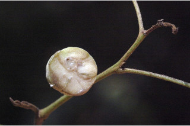
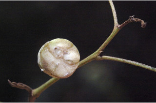

Trees, buttressed, up to 30 m tall.
ಆನಿಕೆಗಳುಳ್ಳ 30 ಮೀ. ಎತ್ತರದವರೆಗೆ ಬೆಳೆಯುವ ಮರಗಳು.
വപ്രമൂലമുള്ള, 30 മീറ്റര് വരെ ഉയരമുള്ള, മരങ്ങള്.
மரங்கள், தாங்கு வேர்கள் (பட்ரஸ்டு) கொண்டவை, 30 மீ. உயரம் வரை வளரக்கூடியது.
Bark light brown, flaky; blaze cream.
ತೊಗಟೆ ತೆಳು ಕಂದು ಬಣ್ಣದಲ್ಲಿದ್ದು ಚಕ್ಕೆ ರೂಪದಲ್ಲಿರುತ್ತದೆ;ಕಚ್ಚು ಮಾಡಿದ ಜಾಗ ಕೆನೆ ಬಣ್ಣದಲ್ಲಿರುತ್ದೆ.
അടര്ന്നിളകുന്ന, ഇളം തവിട്ട് നിറത്തിലുള്ള പുറംതൊലി; വെട്ട് പാടിന് ക്രീം നിറമാണ്.
மரத்தின் பட்டை வெளிறிய ப்ரவுன் நிறமானது, பெரிய செதில்களாக உதிருபவை; உள்பட்டை கிரீம் நிறமானது.
Young branchlets terete, yellowish brown lepidote scales.
ಎಳೆಯ ಕಿರುಕೊಂಬೆಗಳು ದುಂಡಾಕಾರದಲ್ಲಿರುತ್ತವೆ ಮತ್ತು ಹಳದಿ ಕಂದು ಬಣ್ಣದ ಹೊಟ್ಟು ರೂಪದ ಶಲ್ಕೆಗಳಿಂದ ಆವರಿಸಿಕೊಂಡಿರುತ್ತದೆ.
മഞ്ഞ കലര്ന്ന തവിട്ട് നിറത്തിലുള്ള പരുക്കന് ശല്ക്കിതമായ, ഉരുണ്ട ഇളം ഉപശാഖകള്.
சிறிய நுனிக்கிளைகள் குறுக்குவெட்டுத் தோற்றத்தில் வளையமானது, மஞ்சள் கலந்த ப்ரவுன் நிறமான லெப்பிடோட் செதில்களுடையது.
Latex white from cut end of bark, not profuse.
ಕತ್ತರಿಸಿದ ತೊಗಟೆಯ ತುದಿಯಿಂದ ಬಿಳಿ ಸಸ್ಯ ಕ್ಷೀರ ಒಸರುತ್ತದೆ;ಕ್ಷೀರ ವಿಫುಲವಾಗಿರುವುದಿಲ್ಲ.
പുറംതൊലിയുടെ മുറിവായില് നിന്നുള്ള വെളുത്ത സ്രവം സമൃദ്ധമല്ല.
தண்டு வெட்டப்படும் போது குறைந்தளவு வெள்ளை நிறமான பால் போன்ற திரவத்தை சுரக்ககூடியது.
Leaves compound, imparipinnate, alternate, spiral; rachis 6-26 cm long, pulvinate, yellowish brown lepidote scales; petiolules ca. 1 cm; leaflets 5-7, opposite-subopposite or alternate, lamina 12-18 x 5-6 cm, oblong to oblong-lanceolate, apex acute, base oblique, margin wavy and slightly revolute, sparsely lepidote_scaly beneath; secondary_nerves ca. 10 pairs, domatia sometimes with hairy in axils; tertiary_nerves reticulo-percurrent, sometimes obscure in mature leaves.
ಎಲೆಗಳು ಸಂಯುಕ್ತಪರ್ಣಿಗಳಾಗಿದ್ದು ಬೆಸ ಸಂಖ್ಯೆಯ ಗರಿರೂಪದಲ್ಲಿರುತ್ತವೆ ಮತ್ತು ಪರ್ಯಾಯ ಮತ್ತು ಸುತ್ತು ಜೋಡನಾ ವ್ಯವಸ್ಥೆಯಲ್ಲಿರುತ್ತವೆ;ಅಕ್ಷದಿಂಡು 6 - 26 ಸೆಂ.ಮೀ.ಉದ್ದವಿದ್ದು ಉಬ್ಬಿದ ಬುಡ ಹೊಂದಿದ್ದು ಹಳದಿ ಕಂದು ಬಣ್ಣದ ಹೊಟ್ಟು ರೂಪದ ಶಲ್ಕೆಗಳಿಂದ ಕೂಡಿರುತ್ತವೆ ; ಕಿರುತೊಟ್ಟುಗಳು ಅಂದಾಜು 1ಸೆಂ.ಮೀ. ಉದ್ದವಿರುತ್ತವೆ; ಕಿರುಎಲೆಗಳು 5 ರಿಂದ 7 ಇದ್ದು ಅಭಿಮುಖ-ಉಪಅಭಿಮುಖ ಅಥವಾ ಪರ್ಯಾಯ ರೀತಿಯಲ್ಲಿರುತ್ತವೆ;ಪತ್ರಗಳು 12-18 X 5-6 ಸೆಂ.ಮೀ. ಗಾತ್ರದಲ್ಲಿದ್ದು ಚತುರಸ್ರದಿಂದ ಚತರಸ್ರ-ಭರ್ಜಿಯ ಆಕಾರದಲ್ಲಿದ್ದು ಚೂಪಾದ ತುದಿ,ಓರೆಯಾದ ಬುಡ ಹೊಂದಿರುತ್ತವೆ ಮತ್ತು ತರಂಗಿತವಾದ ಮತ್ತು ತುಸುವಾಗಿ ಹಿಂಸುರುಳಿಯಾದ ಅಂಚನ್ನು ಹೊಂದಿರುತ್ತವೆ ಹಾಗೂ ತಳಭಾಗದಲ್ಲಿ ವಿರಳವಾಗಿ ಹೊಟ್ಟು ರೂಪದ ಶಲ್ಕೆಗಳಿಂದ ಆವೃತಗೊಂಡಿರುತ್ತವೆ; ಎರಡನೇ ದರ್ಜೆಯ ನಾಳಗಳು ಅಂದಾಜು 10 ಜೋಡಿಗಳಿರುತ್ತವೆ ಕೆಲವು ವೇಳೆ ಅಕ್ಷಗಳಲ್ಲಿ ರೋಮಗಳನ್ನು ಹೊಂದಿರುತ್ತವೆ;ಮೂರನೇ ದರ್ಜೆಯ ನಾಳಗಳು ಜಾಲಬಂಧ ನಾಳ ವಿನ್ಯಾಸದಲ್ಲಿದ್ದು ಎಲೆ ದಿಂಡಿಗೆ ಅಡ್ಡವಾಗಿ ಕೂಡುತ್ತವೆ, ಕೆಲವು ವೇಳೆಯಲ್ಲಿ ಬಲಿತ ಎಲೆಗಳಲ್ಲಿ ಅಗೋಚರವಾಗಿರುತ್ತದೆ.
ഇലകള് ഏകാന്തര ക്രമത്തില്, സര്പ്പിളമായടുക്കിയ, അസമപിച്ഛക ബഹുപത്രങ്ങളാണ്; മഞ്ഞകലര്ന്ന തവിട്ട് നിറത്തിലുള്ള പരുക്കന് ശല്ക്കിതമായതും പത്രവൃന്തതല്പമുള്ളതുമായ മുഖ്യാക്ഷത്തിന് 6 സെ.മീ മുതല് 26 സെ.മീ വരെ നീളം; പത്രകവൃന്തങ്ങള്ക്ക് ഏതാണ്ട് 1 സെ.മീ നീളം; സമ്മുഖ-ഉപസമ്മുഖമോ ഏകാന്തരമോ ആയ, 5 മുതല് 7 വരെ പത്രകങ്ങള്, പത്രകഫലകത്തിന് 12 സെ.മീ മുതല് 18 സെ.മീ വരെ നീളവും 5 സെ.മീ മുതല് 6 സെ.മീ വരെ വീതിയും, ആകൃതി ദീര്ഘായതം തൊട്ട് ദീര്ഘായത-കുന്താകൃതി വരെയാണ്, പത്രാഗ്രം നിശിതമാണ്, പത്രാധാരം ചരിഞ്ഞതാണ്, അരികുകള് തരംഗിതവും ചെറുതായി പിന്നാക്കം വളഞ്ഞതുമാണ്, കീഴെ അല്പ്പമായി പരുക്കന് ശല്ക്കിതമാണ്, ചിലപ്പോള് കക്ഷങ്ങളില് രോമിലമായ, ഏതാണ്ട് 10 ജോഡി ദ്വിതീയ ഞരമ്പുകള്; ജാലിത-പെര്കറന്റ് വിധത്തിലുള്ള ത്രിതീയ ഞരമ്പുകള്, ചിലപ്പോള് മൂത്ത ഇലകളില് അവ്യക്തമാണ്.
கூட்டிலைகள், ஒற்றைபடை சிறகுவடிவக்கூட்டிலை, மாற்றுஅடுக்கமானவை, சுழல் போல் அமைந்தவை; மத்திய காம்பு (ராக்கிஸ்) 6-26 செ.மீ. நீளமானது, பல்வினேட், மஞ்சள் கலந்த ப்ரவுன் நிறமான லெப்பிடோட் செதில்களுடையவை; சிற்றிலைக்காம்பு 1 செ.மீ. நீளமுடையது; சிற்றிலைகள் 5-7, எதிரடுக்கமானவை அல்லது கிட்டதட்ட எதிரடுக்கமானவை அல்லது மாற்றுஅடுக்கமானவை, சிற்றிலையின் அலகு 12-18 X 5-6 செ.மீ.; நீள்சதுர முதல் நீள்சதுர-ஈட்டி வடிவானது, அலகின் நுனி கூரியது, அலகின் தளம் சமமற்றது, அலகின் விளிம்பு அலைப்போன்றது மற்றும் சிறிது பின்புறம் வளைந்தது (ரெவலுட்) காணப்படும், குறைந்தளவு லெப்பிடோட் செதில்கள் அலகின் அடிப்புறத்தில் உடையது; இரண்டாம் நிலை நரம்புகள் 10 ஜோடிகளுடையது, சிலசமயங்களில் அதன் கிளைக்குமிடத்தில் உரோமங்களுடையது; மூன்றாம் நிலை நரம்புகள் வலைப்பின்னல்-பெர்க்கரண்ட், சிலசமயங்களில் முதிர்ந்த இலைகளில் மூன்றாம் நிலை நரம்புகள் தெளிவற்றவைகள்.
Inflorescences axillary panicles, shorter than or as equal as leaves; flowers unisexual.
ಪುಷ್ಪಮಂಜರಿಗಳು ಅಕ್ಷಾಕಂಕುಳಿನಲ್ಲಿನ ಪುನರಾವೃತ್ತಿಯಾಗಿ ಕವಲೊಡೆಯುವ ಮಾದರಿಯಲ್ಲಿದ್ದು ಎಲೆಗಳಿಗಿಂತ ಚಿಕ್ಕದಾಗಿ ಅಥವಾ ಸಮನಾಗಿರುತ್ತವೆ;ಹೂಗಳು ಏಕ ಲಿಂಗಿಗಳು.
ഇലകളേക്കാള് ചെറുതോ സമമോ ആയ പൂങ്കുലകള്, കക്ഷീയ പാനിക്കിളുകളാണ്; പൂക്കള് ഏകലിംഗികളാണ്.
மஞ்சரி இலைக்கோணங்களில் காணப்படும், பேனிக்கிள், கூட்டிலையின் நீளத்தை விட குட்டையானது அல்லது சமமானது; மலர்கள் ஓர்பாலானவை.
Capsule, subglobose or obovoid or pear shaped, asymmetrical, ca. 2.5 cm long, 2-3-locular with white resinous juice; seeds 1 per locule, arillate.
ಸಂಪುಟ ಫಲಗಳುಅಂದಾಜು 2.5 ಸೆಂ.ಮೀ. ಉದ್ದವಿದ್ದು ಉಪಗೋಳಾಕಾರ ಅಥವಾ ಬುಗುರಿಯಾಕಾರದಲ್ಲಿ ಅಥವಾ ಪೇರು ಹಣ್ಣಿನ ರೀತಿ ತುದಿಯ ಕಡೆಗೆ ಮೊನಚಾಗುತ್ತಾ ಹೋಗುವ ಆಕಾರದಲ್ಲಿರುತ್ತವೆ ಮತ್ತು ಅಸಮ ಪಾರ್ಶ್ವತೆಯುಳ್ಳದ್ದಾಗಿರುತ್ತವೆ; ಸಂಪುಟ ಫಲಗಳು 2 ರಿಂದ 3 ಕೋಶಗಳನ್ನೊಳಗೊಂಡಿದ್ದು ಅಂಟು ರಸವನ್ನು ಹೊಂದಿರುತ್ತವೆ; ಬೀಜಗಳು
ഓരോ അറയിലും അരിലുള്ള ഓരോ വിത്തുള്ള, വെളുത്ത നിറത്തില് കൊഴുത്ത രസം നിറഞ്ഞ 2 ഓ 3 ഓ അറകളുള്ള കായ, ഏതാണ്ട് 2.5 സെ.മീ നീളമുള്ള, അസമമായ, ഉപഗോളാകാരമോ അപഅണ്ഡാകാരമോ പിയര് ആകൃതിയിലുള്ളതോ ആയ കാപ്സ്യൂള് ആണ്.
வெடிகனி (கேப்சூல்), கோள வடிவம் போன்றது அல்லது தலைகீழ் முட்டை அல்லது பேரிக்காய் வடிவானது, சமமற்றது, 2.5 செ.மீ. நீளம், 2-3 அறைகளுடையது, வெள்ளை நிறமான ரெசினுடையது; விதைகள் அறைக்கு ஒன்றாக கொண்டது, பத்ரி (ஏரில்) உடையது.


 
